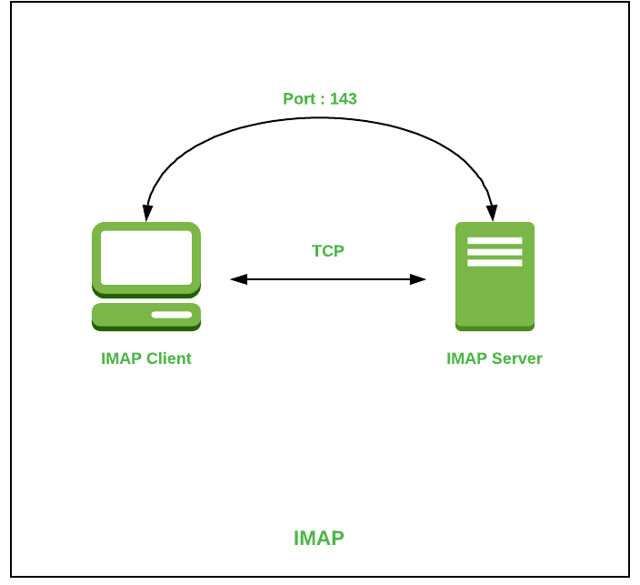

IMAP (протокол за достъп до интернет съобщения)
Това е протоколът на приложния слой, използван за достъп до кореспонденция по имейл. Подобно на стандартите, разгледани по-горе, IMAP се основава на TCP транспортния протокол, а порт 143 се използва за изпълнение на задачите, които са му зададени (или 993 за SSL / TLS връзки).
Всъщност протоколът за достъп до интернет съобщения предоставя най-широките възможности за работа с писма и директно пощенски кутии, хоствани на централен сървър. Клиентското приложение, което използва този протокол за своята работа, има пълен достъп до електронна кореспонденция, както ако не се съхранява на сървъра, а на компютъра на потребителя.
IMAP ви позволява да извършвате всички необходими действия с писма и пощенски кутии директно на вашия компютър, без да е необходимо постоянно да изпращате прикачени файлове и текстово съдържание на сървъра и да ги изтегляте обратно. Разглежданият по-горе POP3, както вече посочихме, работи малко по-различно, като „изтегля” необходимите данни, когато е свързан.
Назад...